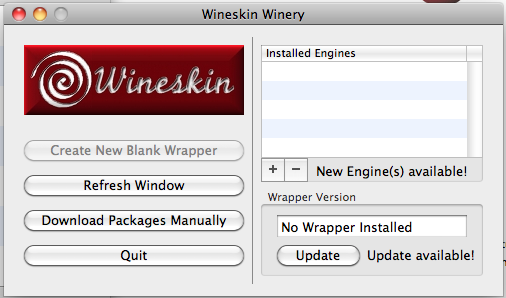
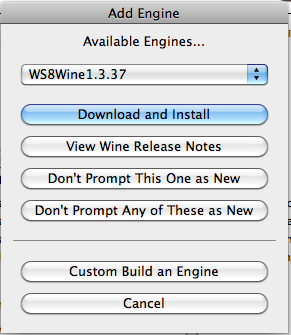
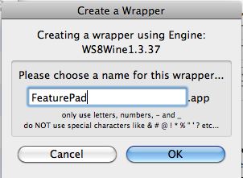
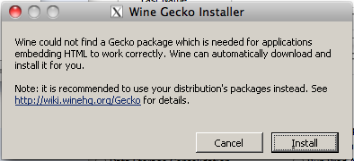
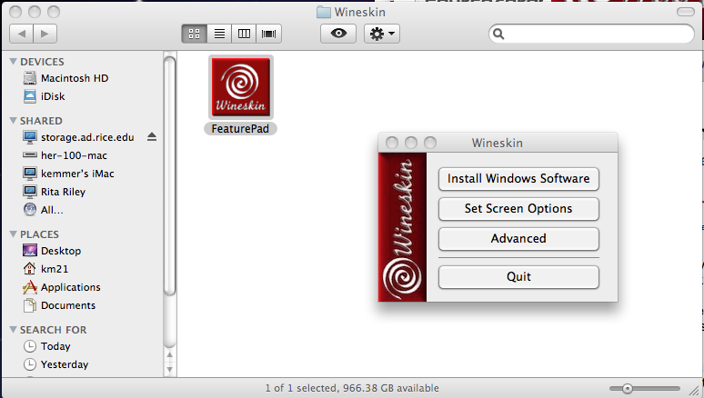
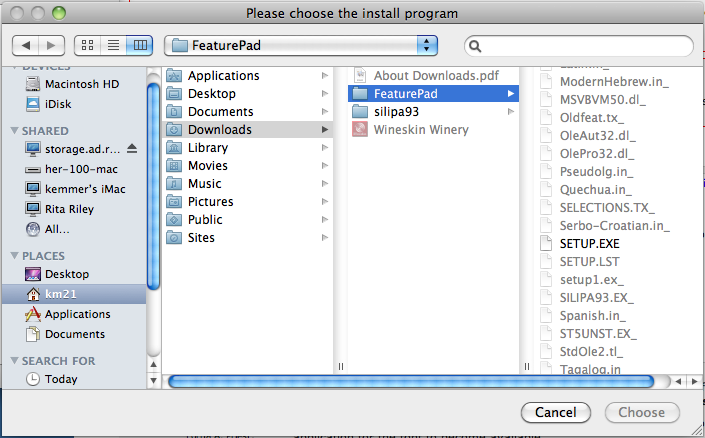
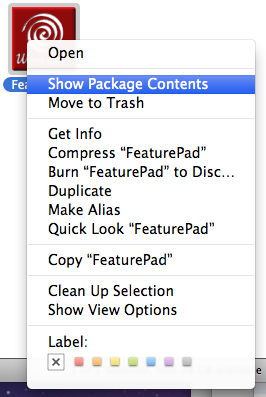

Running FeaturePad on Mac or Linux with Wine
FeaturePad is a piece of software for learning phonological features and works well with Bruce Hayes' 2009 textbook, Introductory Phonology. What it does not work well with, unfortunately, are non-Windows computers. Fortunately, there is the open source project Wine which provides users of non-Windows operating systems on Intel machines access to just enough Windows environment to run many different kinds of software without having to purchase and install Windows or run a full-blown virtualization environment. Instructions for linux follow the instructions for MacOS.
Intel Macs
Apple switched to Intel processors starting in 2005; this works with Macs sold since then. Known working with 10.6 (snow leopard) and 10.7 (lion). Please let me know if you use these instructions whether they work/don't work for you.
Step 1: download Wineskin
There are many ways to get Wine running on your Mac. The easiest way I've found is with WineSkin. Download Wineskin from its downloads page. Ignore the form that pops-up on the download page, you don't need to fill it in to get the zip file.
Step 2: Install and launch 'Wineskine Winery'
The main application you have just downloaded is a tool for putting a Windows-emulation wrapper around FeaturePad so it can run on your Mac. You can run this from anywhere: your Downloads folder, your Desktop, your Applications folder, it's really up to you. When you have launched Wineskin, it should look like Figure 1.
- 
- Figure 1: Wineskin main screen
Step 3: Download a Wine 'engine'
We need to prepare your new copy of Wineskin to create stand-alone applications. The first step is to download the Wine engine that will do the actual work. In the upper-right corner of the Wineskin window there is an "Installed Engines" list; this will be empty by default. Click the plus sign button below this list and then click the "Download and Install" button (as shown in Figure 2) and click "OK" on the "File to download and install" window that appears.
- 
- Figure 2: Wineskin: File to download and install window
Step 4: Setup a Wine 'wrapper'
In the lower-right corner of the Wineskin Winery window, click the "Update" button to install a wrapper and click "OK" on the "File to download and install" window that appears.
Step 5: Click 'Create New Blank Wrapper'
Now, finally, on the left side of the Wineskin window, click the 'Create a New Blank Wrapper' button.
In the "Create a Wrapper" window that appears, replace 'MyCoolWrapper' with the name 'FeaturePad' (no quotes) and click "OK" (Figure 3). This will almost certainly ask you to install Gecko (see Figure 4); just click Install and wait for it to download and install.
- 
- Figure 3: Create a Wrapper
- 
- Figure 4: Install Gecko
When it finally finishes, you'll see a "Wrapper Creation Finished" modal dialog. Click "View wrapper in Finder" to continue (Figure 5). You are now done with Wineskin and can safely quit the application if you like.

- Figure 5: View wrapper in Finder
Step 5: Download the FeaturePad and Font Installers we need
Get FeaturePad from Bruce Hayes' web site (hard to find because the download link is the utterly uninformative word 'here'). It doesn't matter where you put it (Downloads folder is fine) as long as you remember what you did with it until step 6.
Get the SIL Doulos 1993 font from the SIL downloads site. (This font is obsolete and junky, don't use it for anything else. FeaturePad will stop using it at some point too.). Downloads folder is a good place to leave this too.
Step 6: Install FeaturePad
Double-click on the FeaturePad icon you created in step 4 (it will have a red Wineskin icon). This will bring up the "Wineskin" window shown in Figure 6.
- 
- Figure 6: FeaturePad Wineskin first launch
Click "Install Windows Software" and navigate to SETUP.EXE for FeaturePad. If you just let your web browser download and expand FeaturePad.zip into your Downloads folder, then this should look more or less like Figure 7. Select "SETUP.EXE" and click "Choose".
- 
- Figure 7: Finder window
Step 7: Follow the FeaturePad installer instructions.
Click "OK" on the first grey screen that pops up. Click the picture of an ancient computer with what appears to be a box of floppy disks in front of it on the next grey screen. Click "OK" on the "Setup Successful" screen. Click "OK" on the "Choose Executable" pop up to choose "/Program Files/FeaturePad/FeaturePad.exe". Click "Quit" in the Wineskin window.
Step 8: Install SIL Doulos 1993 font.
We're almost there. In the Finder (file manager), control-click (aka right click) on the FeaturePad icon to bring up the menu shown in Figure 8. Select "Show Package Contents". This will give you access to all of the files wrapped up inside this tiny virtual Windows machine we're building.
- 
- Figure 8: right click FeaturePad
Double-click on drive_c
Double-click on windows
Double-click on Fonts
You should now have the Windows/Fonts folder open. Now move the Ipa93dr.ttf file you downloaded in Step 5 into this folder. Close up all of those Finder windows and you're done.
Double-click the FeaturePad icon to launch FeaturePad.exe on your Mac.
Linux
Linux is easy. Get the binary package from your distribution's package manager, download FeaturePad, run the installer, and you're done. At least on my machines (ubuntu 11.10-based), all I had to do was:
: optionally add personal package archive for lastest version sudo add-apt-repository ppa:ubuntu-wine/ppa : update available package information and install sudo apt-get update sudo apt-get install wine1.3
Download FeaturePad and the IPA font per the links in Step 5. Double-click the FeaturePad SETUP.EXE to invoke Wine and run the installer.
Finally, be sure to go back and follow the instructions above in Step 8 so you will have the IPA Doulos '93 font installed in your ~/.wine/drive_c/windows/Fonts directory.